Elements of Art
The fundamental visual components every artist uses to construct meaning. Click any card to explore each element in depth.

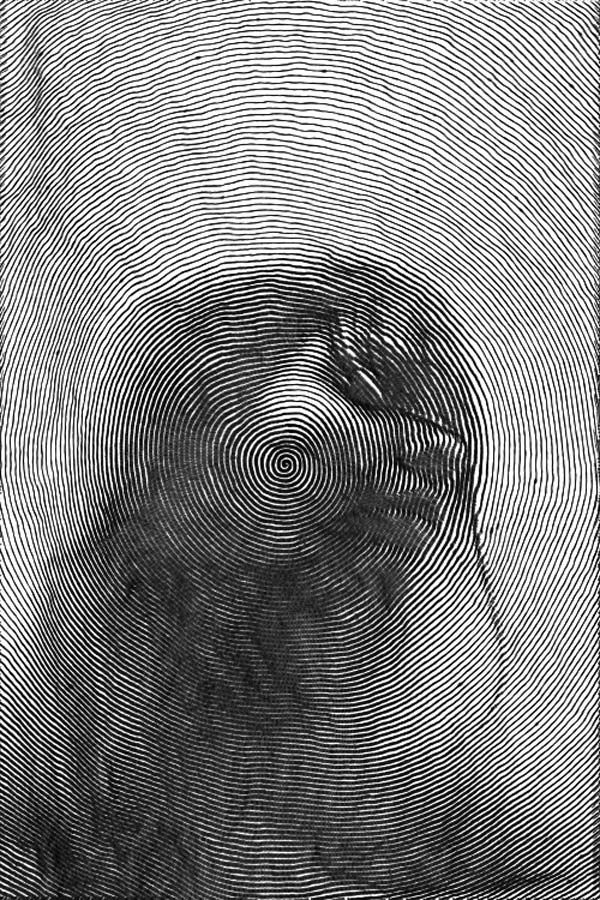


Line
The foundational path of a moving point that directs the viewer's eye across a composition.

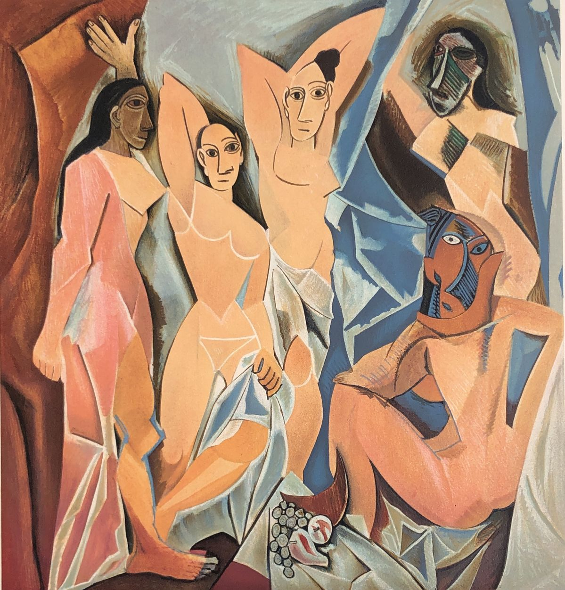


Shape
Two-dimensional, flat areas created when a line closes or sets boundaries around a defined space.
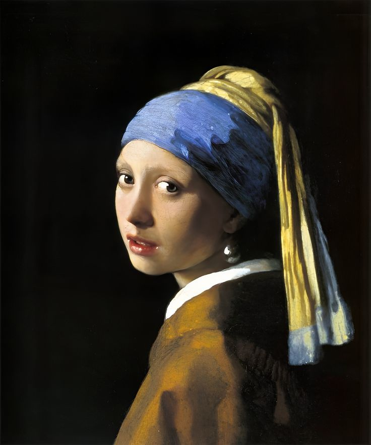


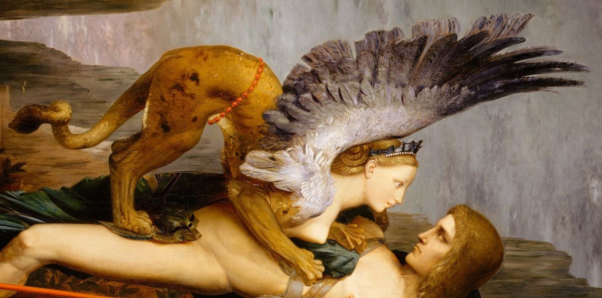

Form
Three-dimensional objects that take up physical volume or create the illusion of depth.

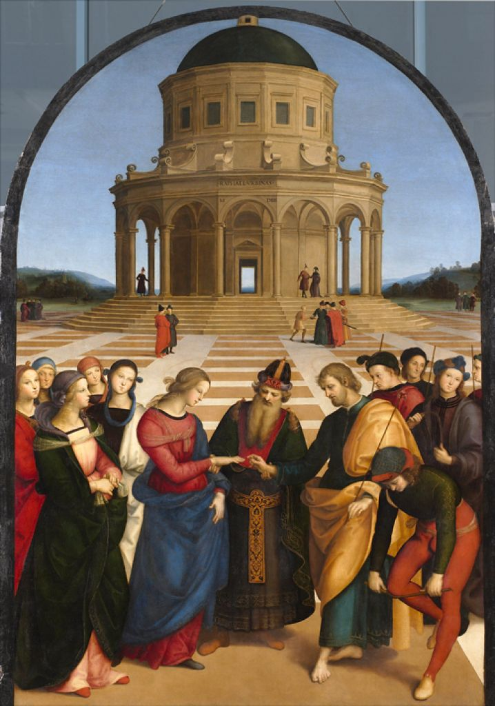

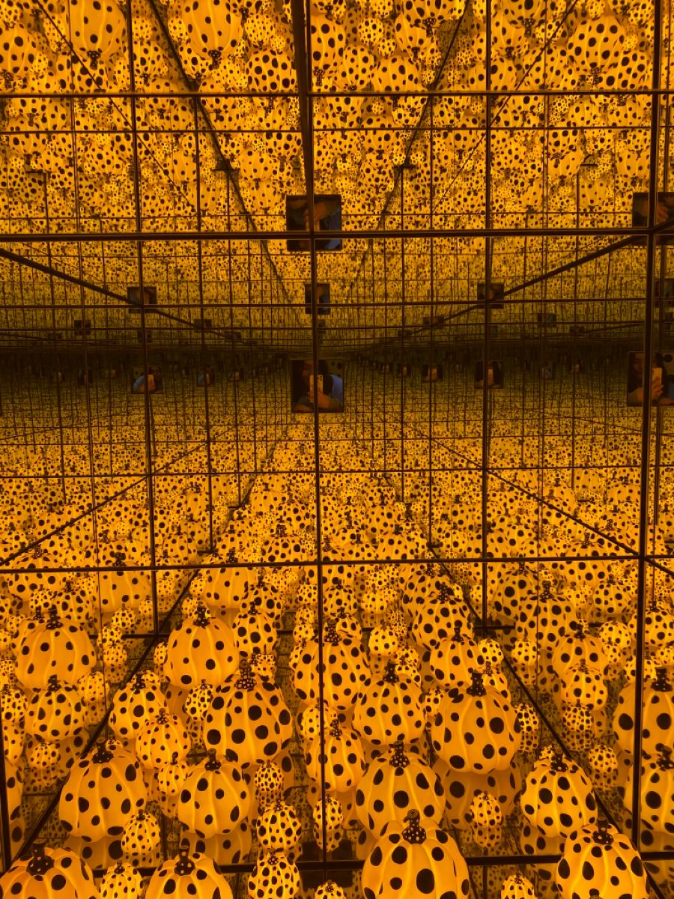

Space
The depth, open margins, or area surrounding and separating objects within a work.

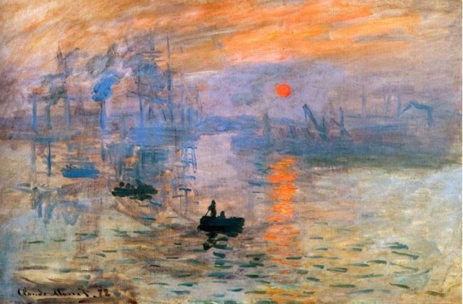


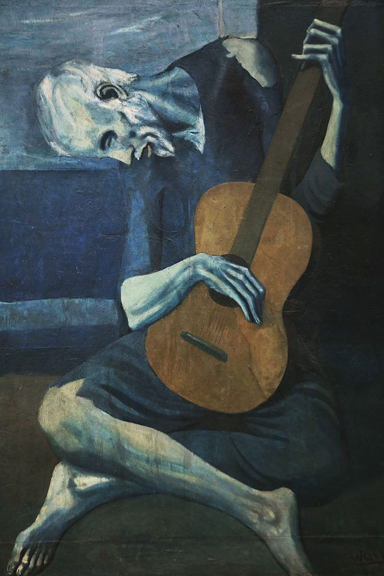
Color
Visual properties generated by light, defined through shifting hues, intensities, and values.

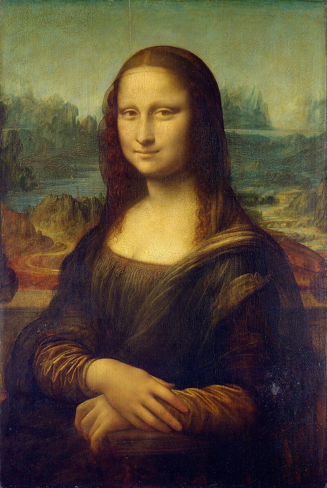
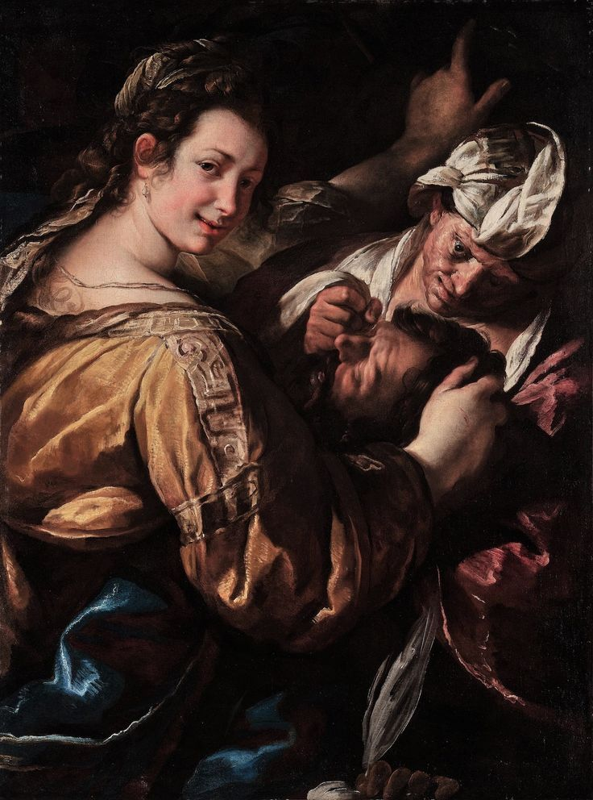
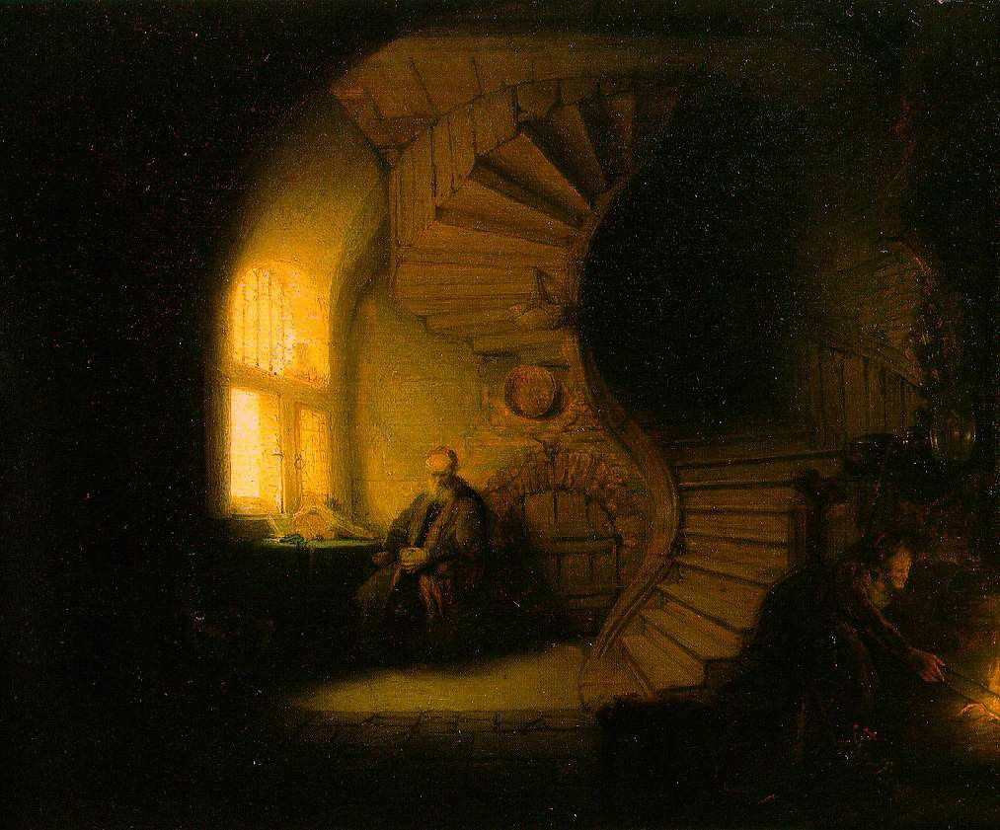

Value
The scale of lightness or darkness of a color, essential for creating contrast and mood.


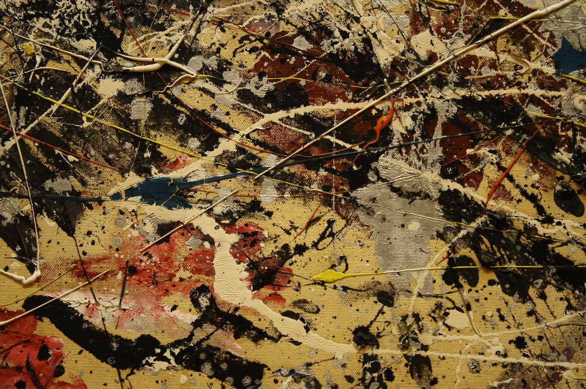
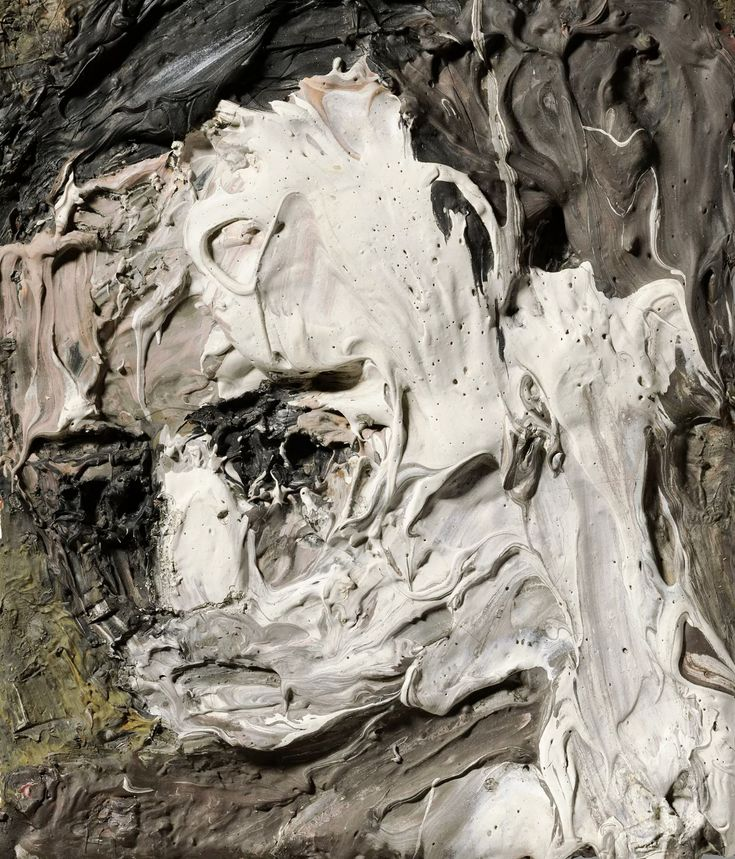

Texture
The perceived visual depth or actual surface tactile feel of a physical artwork.